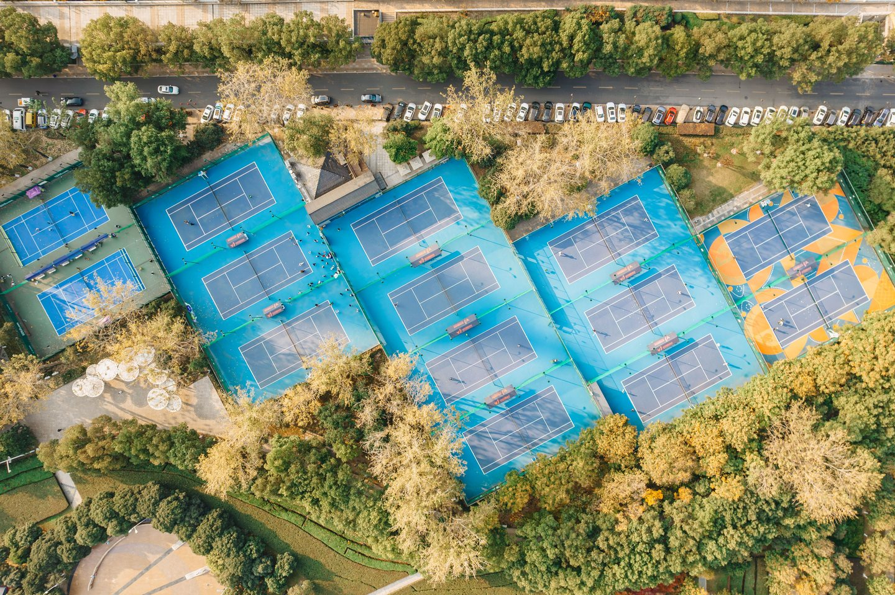
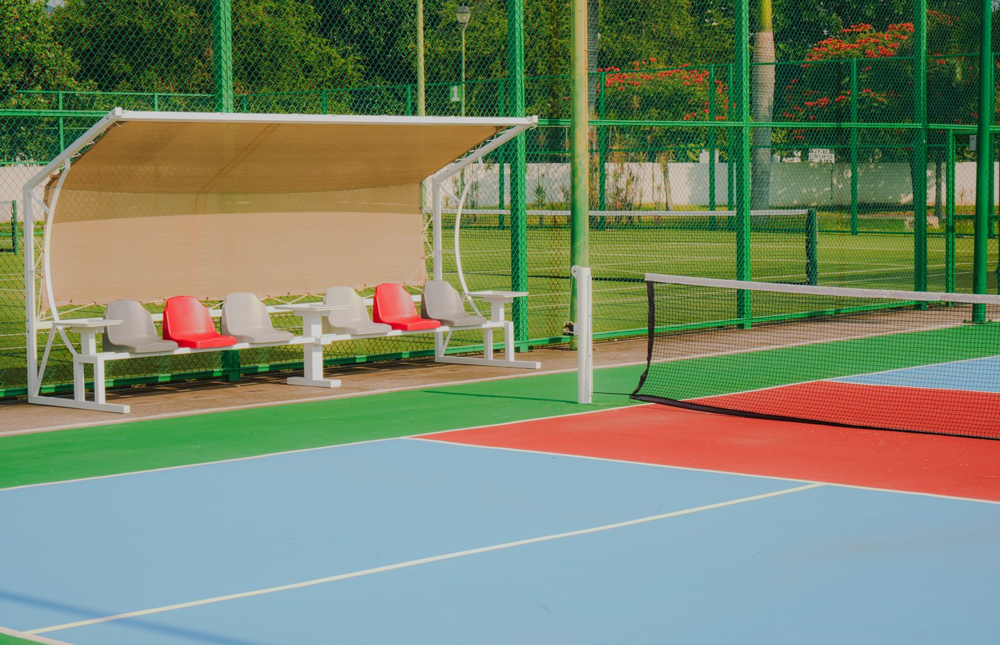

Blue courts from above
The overhead view shows how blue surfaces and white markings give several courts a consistent look.

A view from the sideline
From the sideline, you can see how the blue, red, and green areas meet around the net and painted lines.